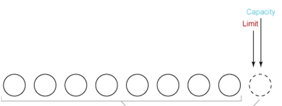
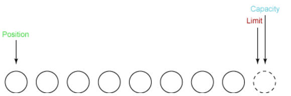
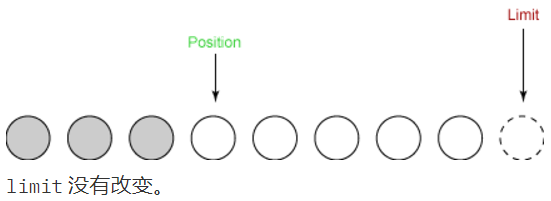
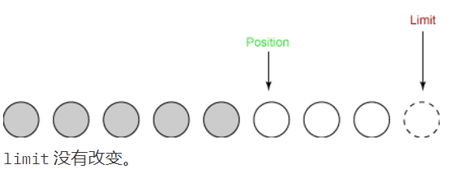
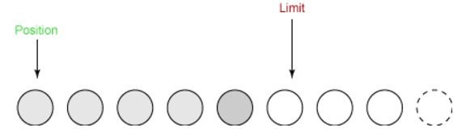
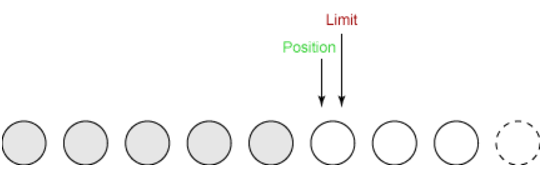
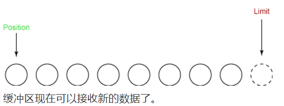
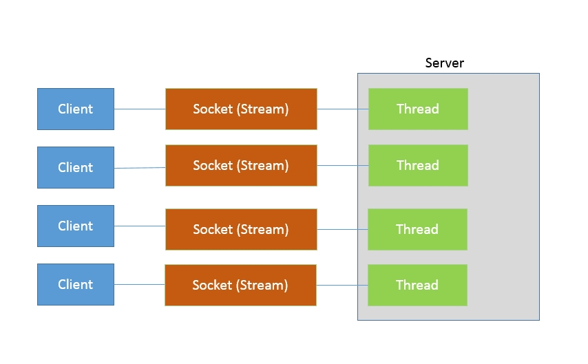
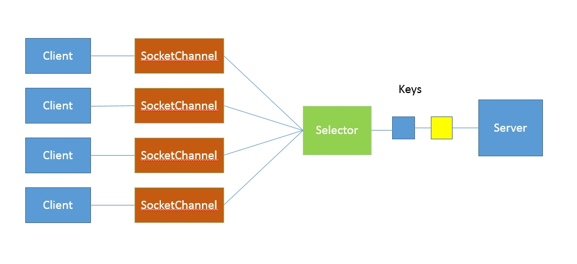

成功才是成功之母
概述
Java IO 方式有很多种，基于不同的 IO 抽象模型和交互方式，可以进行简单区分。
首先，传统的 java.io 包，它基于流模型实现，提供了我们最熟知的一些 IO 功能，比如 File 抽象、输入输出流等。交互方式是同步、阻塞的方式，也就是说，在读取输入流或者写入输出流时，在读、写动作完成之前，线程会一直阻塞在那里，它们之间的调用是可靠的线性顺序。
java.io 包的好处是代码比较简单、直观，缺点则是 IO 效率和扩展性存在局限性，容易成为应用性能的瓶颈。
第二，在 Java 1.4 中引入了 NIO 框架（java.nio 包），提供了 Channel、Selector、Buffer 等新的抽象，可以构建多路复用的、同步非阻塞 IO 程序，同时提供了更接近操作系统底层的高性能数据操作方式。
第三，在 Java 7 中，NIO 有了进一步的改进，也就是 NIO 2，引入了异步非阻塞 IO 方式，也有很多人叫它 AIO（Asynchronous IO）。异步 IO 操作基于事件和回调机制，可以简单理解为，应用操作直接返回，而不会阻塞在那里，当后台处理完成，操作系统会通知相应的线程进行后续工作。
java NIO组成
通道 和 缓冲区 是 NIO 中的核心对象，几乎在每一个 I/O 操作中都要使用它们。
通道是对原 I/O 包中的流的模拟。到任何目的地(或来自任何地方)的所有数据都必须通过一个 Channel 对象。一个 Buffer 实质上是一个容器对象。发送给一个通道的所有对象都必须首先放到缓冲区中；同样地，从通道中读取的任何数据都要读到缓冲区中。
什么是缓冲区
Buffer 是一个对象， 它包含一些要写入或者刚读出的数据。 在 NIO 中加入 Buffer 对象，体现了新库与原 I/O 的一个重要区别。在面向流的 I/O 中，您将数据直接写入或者将数据直接读到 Stream 对象中。
在 NIO 库中，所有数据都是用缓冲区处理的。在读取数据时，它是直接读到缓冲区中的。在写入数据时，它是写入到缓冲区中的。任何时候访问 NIO 中的数据，您都是将它放到缓冲区中。
缓冲区实质上是一个数组。通常它是一个字节数组，但是也可以使用其他种类的数组。但是一个缓冲区不 仅仅 是一个数组。缓冲区提供了对数据的结构化访问，而且还可以跟踪系统的读/写进程。
缓冲区类型
最常用的缓冲区类型是 ByteBuffer。一个 ByteBuffer 可以在其底层字节数组上进行 get/set 操作(即字节的获取和设置)。
ByteBuffer 不是 NIO 中唯一的缓冲区类型。事实上，对于每一种基本 Java 类型都有一种缓冲区类型：
- ByteBuffer
- CharBuffer
- ShortBuffer
- IntBuffer
- LongBuffer
- FloatBuffer
- DoubleBuffer
什么是通道
Channel是一个对象，可以通过它读取和写入数据。拿 NIO 与原来的 I/O 做个比较，通道就像是流。
正如前面提到的，所有数据都通过 Buffer 对象来处理。您永远不会将字节直接写入通道中，相反，您是将数据写入包含一个或者多个字节的缓冲区。同样，您不会直接从通道中读取字节，而是将数据从通道读入缓冲区，再从缓冲区获取这个字节。
通道与流的不同之处在于通道是双向的。而流只是在一个方向上移动(一个流必须是 InputStream 或者 OutputStream 的子类)， 而 通道 可以用于读、写或者同时用于读写。因为它们是双向的，所以通道可以比流更好地反映底层操作系统的真实情况。
NIO中的读写
读和写是 I/O 的基本过程。从一个通道中读取很简单：只需创建一个缓冲区，然后让通道将数据读到这个缓冲区中。写入也相当简单：创建一个缓冲区，用数据填充它，然后让通道用这些数据来执行写入操作。
如下示例：我们以读取一个文件内容为示例，从文件中读文件需要三步：
(1) 从 FileInputStream 获取 Channel
(2) 创建 Buffer
(3) 将数据从 Channel 读到Buffer 中。
代码：
1 | //从 FileInputStream 获取通道 |
写入文件过程类似：1
2
3
4
5
6
7
8//从 FileOutputStream 获取通道
FileOutputStream fout = new FileOutputStream( "kai.txt" );
FileChannel fc = fout.getChannel();
//创建缓冲区
ByteBuffer buffer = ByteBuffer.allocate( 1024 );
buffer.flip();
//将数据从通道读到缓冲区
fc.write( buffer );
上面两个例子是读与写进行分开的，下面介绍读写结合：
三个基本操作：首先创建一个 Buffer，然后从源文件中将数据读到这个缓冲区中，然后将缓冲区写入目标文件。这个程序不断重复 ― 读、写、读、写 ― 直到源文件结束。
读写结合操作会使用到使用clear() 和 flip() 方法重设缓冲区，使它可以接受读入的数据。flip()方法让缓冲区可以将新读入的数据写入另一个通道。在从输入通道读入缓冲区之前，我们调用clear() 方法。同样，在将缓冲区写入输出通道之前，我们调用flip() 方法
1 | FileInputStream fin = new FileInputStream( "fan.txt" ); |
缓冲区详解
本节将介绍 NIO 中两个重要的缓冲区组件：状态变量和访问方法 (accessor)。
状态变量是前一节中提到的”内部统计机制”的关键。每一个读/写操作都会改变缓冲区的状态。通过记录和跟踪这些变化，缓冲区就可能够内部地管理自己的资源。
在从通道读取数据时，数据被放入到缓冲区。在有些情况下，可以将这个缓冲区直接写入另一个通道，但是在一般情况下，您还需要查看数据。这是使用 访问方法 get() 来完成的。同样，如果要将原始数据放入缓冲区中，就要使用访问方法 put()。
状态变量
三个值指定缓冲区在任意时刻的状态：
- position
- limit
- capacity
Position
缓冲区实际上就是美化了的数组。在从通道读取时，您将所读取的数据放到底层的数组中。 position 变量跟踪已经写了多少数据。更准确地说，它指定了下一个字节将放到数组的哪一个元素中。因此，如果您从通道中读三个字节到缓冲区中，那么缓冲区的 position 将会设置为3，指向数组中第四个元素。
同样，在写入通道时，您是从缓冲区中获取数据。 position 值跟踪从缓冲区中获取了多少数据。更准确地说，它指定下一个字节来自数组的哪一个元素。因此如果从缓冲区写了5个字节到通道中，那么缓冲区的 position 将被设置为5，指向数组的第六个元素。
Limit
limit 变量表明还有多少数据需要取出(在从缓冲区写入通道时)，或者还有多少空间可以放入数据(在从通道读入缓冲区时)。
position 总是小于或者等于 limit。
Capacity
缓冲区的 capacity 表明可以储存在缓冲区中的最大数据容量。实际上，它指定了底层数组的大小 ― 或者至少是指定了准许我们使用的底层数组的容量。
limit 决不能大于 capacity。
状态变量的变化
出于本例子的需要，我们假设这个缓冲区的 总容量 为8个字节。
那么一开始的时候，limit和capacity应该在同一位置，都只想数组的尾部，如图：

position 设置为0。如果我们读一些数据到缓冲区中，那么下一个读取的数据就进入 slot 0 。如果我们从缓冲区写一些数据，从缓冲区读取的下一个字节就来自 slot 0 。 position 设置如下所示：

第一次读取：
现在我们可以开始在新创建的缓冲区上进行读/写操作。首先从输入通道中读一些数据到缓冲区中。第一次读取得到三个字节。它们被放到数组中从 position 开始的位置，这时 position 被设置为 0。读完之后，position 就增加到 3，如下所示：

第二次读取：
在第二次读取时，我们从输入通道读取另外两个字节到缓冲区中。这两个字节储存在由 position 所指定的位置上， position 因而增加 2：

将数据写到输出通道中：
在这之前，我们必须调用 flip() 方法。这个方法做两件非常重要的事：
1.它将 limit 设置为当前 position。
2.它将 position 设置为 0。
下面是在 flip 之后的缓冲区：

我们现在可以将数据从缓冲区写入通道了。 position 被设置为 0，这意味着我们得到的下一个字节是第一个字节。 limit 已被设置为原来的 position。
写入：
limit在我们调用 flip() 时被设置为 5，并且 position 不能超过 limit。一次读取五个字节时，这使得 position 增加到 5，并保持 limit 不变，如下所示：

clear：
最后一步是调用缓冲区的 clear() 方法。这个方法重设缓冲区以便接收更多的字节。 Clear 做两种非常重要的事情：
1.它将 limit 设置为与 capacity 相同。
2.它设置 position 为 0。
下图显示了在调用 clear() 后缓冲区的状态：

访问方法
到目前为止，我们只是使用缓冲区将数据从一个通道转移到另一个通道。然而，程序经常需要直接处理数据。例如，您可能需要将用户数据保存到磁盘。在这种情况下，您必须将这些数据直接放入缓冲区，然后用通道将缓冲区写入磁盘。
或者，您可能想要从磁盘读取用户数据。在这种情况下，您要将数据从通道读到缓冲区中，然后检查缓冲区中的数据。
在本节的最后，我们将详细分析如何使用 ByteBuffer 类的 get() 和 put() 方法直接访问缓冲区中的数据。
get()方法
ByteBuffer 类中有四个 get() 方法：
1.byte get();
2.ByteBuffer get( byte dst[] );
3.ByteBuffer get( byte dst[], int offset, int length );
4.byte get( int index );
第一个方法获取单个字节。第二和第三个方法将一组字节读到一个数组中。第四个方法从缓冲区中的特定位置获取字节。那些返回 ByteBuffer 的方法只是返回调用它们的缓冲区的 this 值。
put()方法
ByteBuffer 类中有五个 put() 方法：
1.ByteBuffer put( byte b );
2.ByteBuffer put( byte src[] );
3.ByteBuffer put( byte src[], int offset, int length );
4.ByteBuffer put( ByteBuffer src );
5.ByteBuffer put( int index, byte b );
第一个方法 写入（put） 单个字节。第二和第三个方法写入来自一个数组的一组字节。第四个方法将数据从一个给定的源 ByteBuffer 写入这个 ByteBuffer。第五个方法将字节写入缓冲区中特定的 位置 。那些返回 ByteBuffer 的方法只是返回调用它们的缓冲区的 this值。
关于缓存区的更多内容这里就不多介绍了，可以网上搜一些关于缓冲区的内容。
使用NIO进行网络连接
以前实现socket服务器方式为：
1 | public class DemoServer extends Thread { |
在接收到客户端请求之前，服务器端都是阻塞的，如果是单线程的，每次只能处理单个请求，虽然可以通过加入线程池的方式解决，但是连接数不是很多时，这种方式可以工作的很好，但是如果连接数量急剧上升，这种方式就无法很好的工作了。因为线程上下文切换开销会在高并发时变得很明显，这是同步阻塞方式的低扩展性劣势。

为什么使用NIO连网
关于这点不得不说，NIO的特性之一：多路复用机制。
首先我们先了解下面几个概念：
Selectors
NIO中连网核心对象名为Selector，Selector 就是您注册对各种 I/O 事件的兴趣的地方，而且当那些事件发生时，就是这个对象告诉您所发生的事件。Selector是 NIO 实现多路复用的基础，它提供了一种高效的机制，可以检测到注册在 Selector 上的多个 Channel中，是否有 Channel 处于就绪状态，进而实现了单线程对多 Channel 的高效管理。
我们需要做的第一件事就是创建一个 Selector：
Selector selector = Selector.open();
然后，我们将对不同的通道对象调用 register() 方法，以便注册我们对这些对象中发生的 I/O 事件的兴趣。register() 的第一个参数总是这个 Selector。
ServerSocketChannel
为了接收连接，我们需要一个 ServerSocketChannel。事实上，我们要监听的每一个端口都需要有一个 ServerSocketChannel 。对于每一个端口，我们打开一个 ServerSocketChannel，如下所示：
1 | ServerSocketChannel ssc = ServerSocketChannel.open(); |
第一行创建一个新的 ServerSocketChannel ，最后三行将它绑定到给定的端口。第二行将 ServerSocketChannel 设置为 非阻塞的 。我们必须对每一个要使用的套接字通道调用这个方法。
选择键
下一步是将新打开的 ServerSocketChannels 注册到 Selector上。为此我们使用 ServerSocketChannel.register() 方法，如下所示：
SelectionKey key = ssc.register( selector, SelectionKey.OP_ACCEPT );
register() 的第一个参数总是这个 Selector。第二个参数是 OP_ACCEPT，这里它指定我们想要监听 accept 事件，也就是在新的连接建立时所发生的事件。这是适用于 ServerSocketChannel 的唯一事件类型。
请注意对 register() 的调用的返回值。 SelectionKey 代表这个通道在此 Selector 上的这个注册。当某个 Selector 通知您某个传入事件时，它是通过提供对应于该事件的 SelectionKey 来进行的。SelectionKey 还可以用于取消通道的注册。
下面将进入主循环。使用 Selectors 的几乎每个程序都像下面这样使用内部循环：
1 | int num = selector.select(); |
首先，我们调用 Selector 的select() 方法。这个方法会阻塞，直到至少有一个已注册的事件发生。当一个或者更多的事件发生时， select() 方法将返回所发生的事件的数量。
接下来，我们调用 Selector 的 selectedKeys() 方法，它返回发生了事件的 SelectionKey 对象的一个 集合 。
我们通过迭代 SelectionKeys 并依次处理每个 SelectionKey 来处理事件。对于每一个 SelectionKey，您必须确定发生的是什么 I/O 事件，以及这个事件影响哪些 I/O 对象。
完整示例
1 | public class NIOServer extends Thread { |
步骤总结：
首先，通过 Selector.open() 创建一个 Selector，作为类似调度员的角色。
然后，创建一个 ServerSocketChannel，并且向 Selector 注册，通过指定SelectionKey.OP_ACCEPT，告诉调度员，它关注的是新的连接请求。注意，为什么我们要明确配置非阻塞模式呢？这是因为阻塞模式下，注册操作是不允许的，会抛出IllegalBlockingModeException 异常。
Selector 阻塞在 select 操作，当有 Channel 发生接入请求，就会被唤醒。
NIO与IO相比有什么优点
先看张图：

NIO利用单线程轮询事件的机制，通过高效地定位就绪的Channel，来决定做什么，仅仅select阶段是阻塞的，可以有效避免大量客户端连接时，频繁切换带来的问题，应用的扩展能力有了非常大的提高。
总结
在 Java 编程中，直到最近一直使用 流 的方式完成 I/O。所有 I/O 都被视为单个的字节的移动，通过一个称为 Stream 的对象一次移动一个字节。流 I/O 用于与外部世界接触。它也在内部使用，用于将对象转换为字节，然后再转换回对象。
NIO 与原来的 I/O 有同样的作用和目的，但是它使用不同的方式 块 I/O。正如您将在本教程中学到的，块 I/O 的效率可以比流 I/O 高许多。
NIO还有很多新的功能，比如文件的拷贝，零拷贝的特性等。这些功能放在下篇介绍。